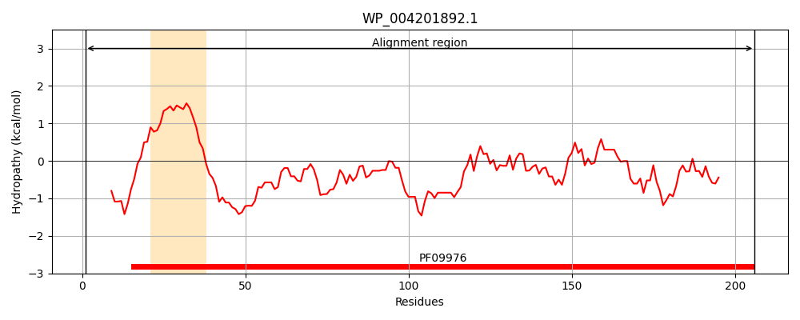
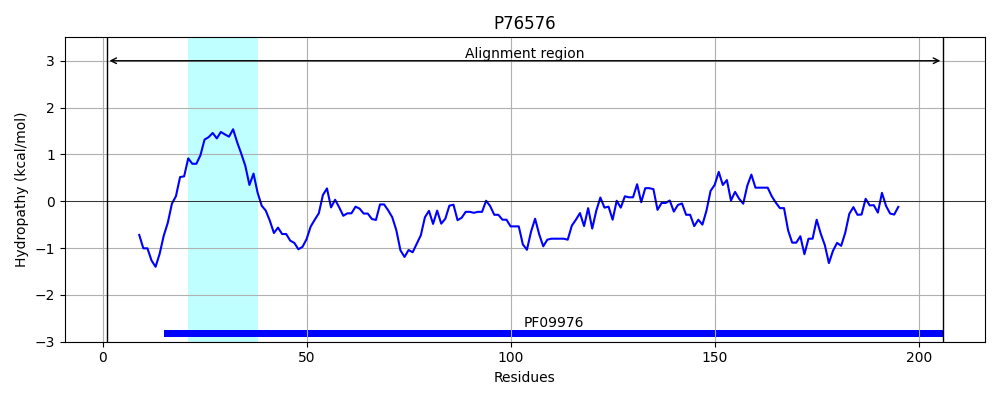
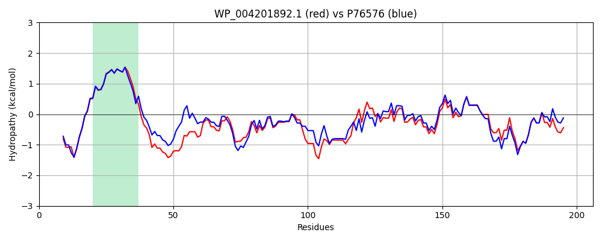

Hit Accession: P76576
Hit TCID: 3.A.5.1.1
Hit Description: gnl|BL_ORD_ID|11478 gnl|TC-DB|P76576|3.A.5.1.1 UPF0070 protein YfgM OS=Escherichia coli (strain K12) OX=83333 GN=yfgM PE=3 SV=1
Mach Len: 206
e:0.000000
Query TMS Count : 1
Hit TMS Count: 1
TMS-Overlap Score: 0.900000
Predicted Substrates:CHEBI:8526;protein polypeptide chain
BLAST Alignment:
Score: 808 , Bit scores: 315 bits, E-value: 4.4e-111, Alignment length: 206, Percentage identity: 75
Query: 1 METFNNENDQVDALKRFFAENGKALAVGVILGIGALVGWRYWTSHQQDTARDASLAYEQATSALKSNTPEVLSGAEKFAADNKNTYGAFASLELAQHFVEQNDLPNAEKQLQQGLAAASDDNLKSVISMRLARVQLQMKQADAALKTLDSIKGEGWTAIVADLRGEILLSKGDKQGARAAWEAGVKSDASPALSEMMRMKMNNLSI 206
ME + NENDQV+A+KRFFAENGKALAVGVILG+GAL+GWRYW SHQ D+AR ASLAY+ A +A+ P+ + AEKFAA+NKNTYGA ASLELAQ FV++N+L A QLQQGLA SD+NLK+VI++RLARVQ+Q+KQADAALKTLD+IKGEGW AIVADLRGE LLSKGDKQGAR+AWEAGVKSD +PALSEMM+MK+NNLSI
Sbjct: 1 MEIYENENDQVEAVKRFFAENGKALAVGVILGVGALIGWRYWNSHQVDSARSASLAYQNAVTAVSEGKPDSIPAAEKFAAENKNTYGALASLELAQQFVDKNELEKAAAQLQQGLADTSDENLKAVINLRLARVQVQLKQADAALKTLDTIKGEGWAAIVADLRGEALLSKGDKQGARSAWEAGVKSDVTPALSEMMQMKINNLSI 206 | Protein Hydropathy Plots: |
|---|
|  |  |
Pairwise Alignment-Hydropathy Plot:
|
|---|
|  |